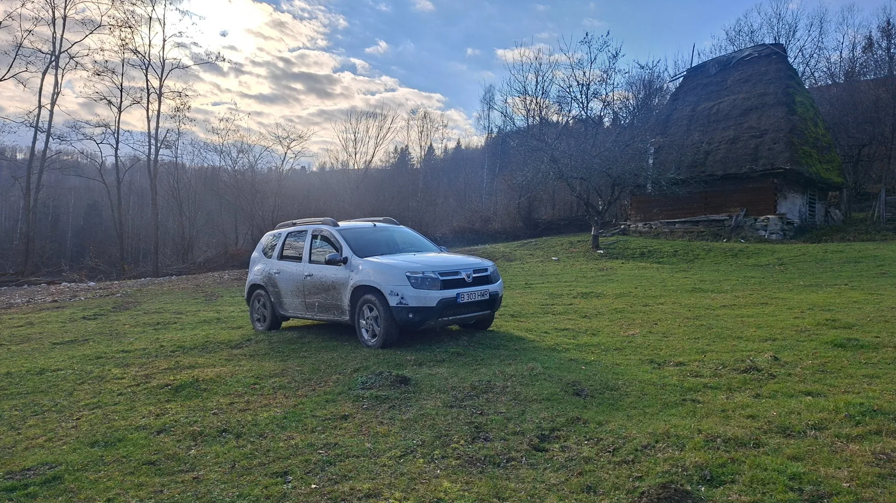

Bran și Moieciu
După Castelul Bran, ia-o pe drumurile dintre satele din Moieciu și bucură-te de priveliștea de la Amfiteatrul Transilvania.
După Castelul Bran, ia-o pe drumurile dintre satele din Moieciu și bucură-te de priveliștea de la Amfiteatrul Transilvania.

Plimbă-te prin Prăpăstiile Zărneștiului sau petrece o după-amiază prin Măgura și Peștera.

Putem porni din Brașov spre Râșnov ori Sanctuarul Libearty sau putem dedica o zi Castelului Peleș din Sinaia.

Te îndrepți spre vest? Te pot ajuta să alegi un traseu prin satele din Apuseni.